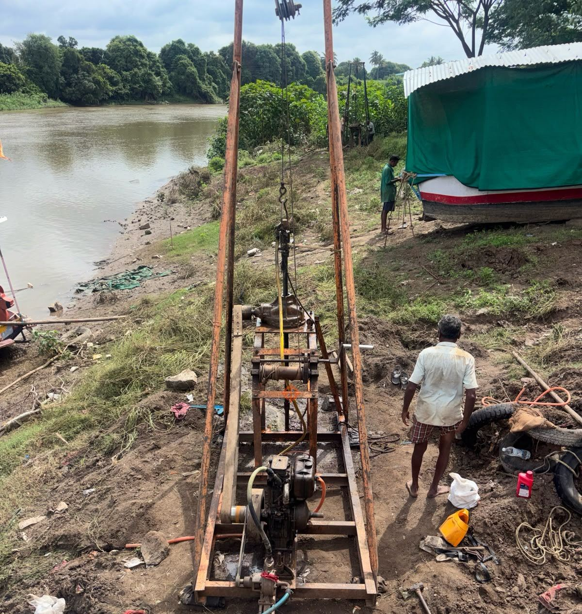
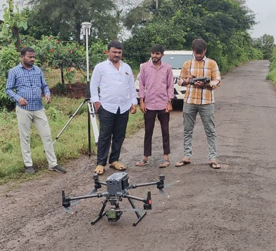
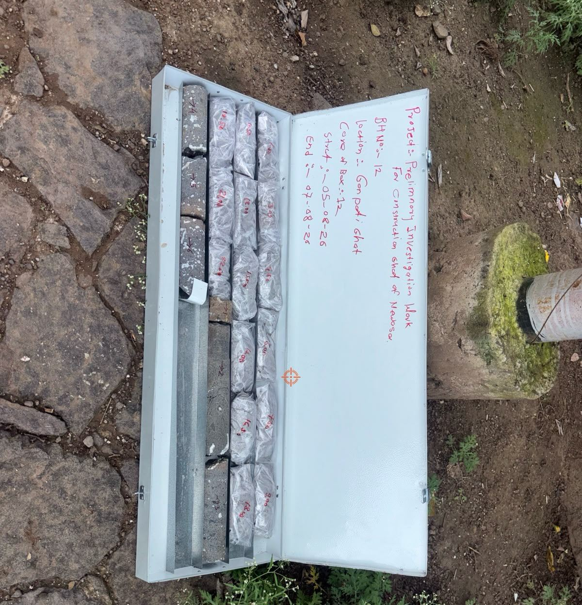
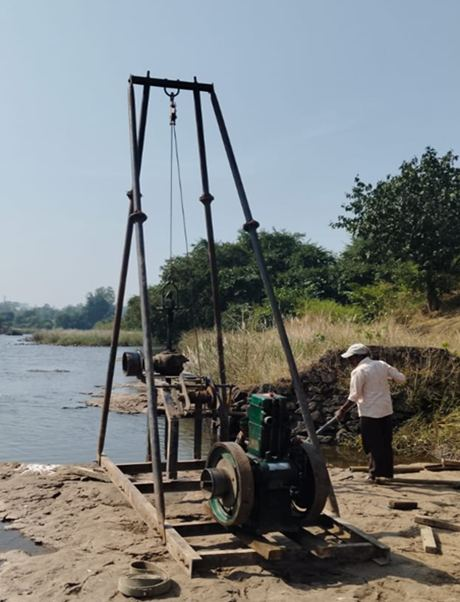
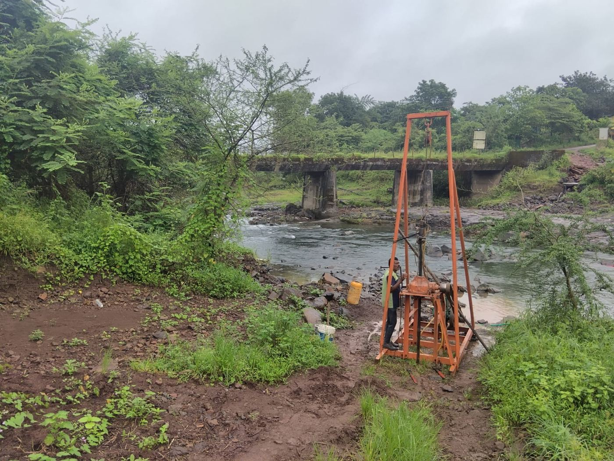
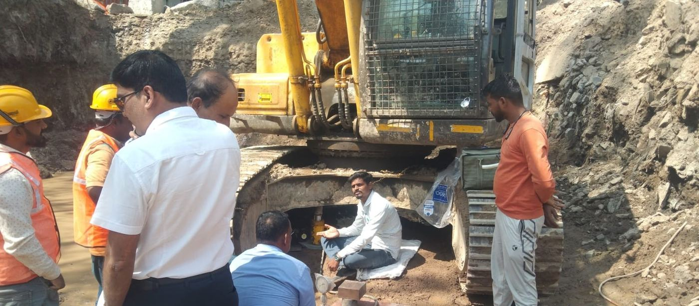

MMGSY-II rural road DPRs, Ahilyanagar
51 roads, 244 km: road, culvert and bridge survey, traffic counts, CBR testing, pavement design, estimates and DPRs.
MRRDA, PMGSY AhilyanagarTen talukas
We measure, investigate, design and supervise infrastructure across Maharashtra: roads and bridges, irrigation and water supply, municipal works, and industrial and institutional sites. Since 2019 we have completed 73 assignments for government departments, municipal bodies and private owners.



Counted from our project register, completed work and work in hand together.
Completed and ongoing work of P R Consulting Engineers LLP, its associate firm P R Associates and their joint venture, from our project register (November 2026).
The same survey teams, engineers and testing partners work across all of these, so a canal job benefits from what we learn on roads, and the other way round.
Rural road DPRs under PMGSY and MMGSY, state highway links, NSV condition surveys on national highways, and PMC for FDR road construction.
780+ km of road DPRs completedBridge site surveys, hydrological studies, boreholes and lab tests, design and DPRs for submersible, minor and two-lane bridges.
17 bridge DPRsCanal restoration surveys, lift irrigation and command area surveys, chak planning and PDN design, ghats, weirs and forest clearances.
Mula, Punegaon, Tajnapur, KadaviJal Jeevan Mission village schemes, network design in WaterGEMS, and the Trimbakeshwar water grid for Kumbh Mela 2027.
91 villagesPMC for five municipal councils, DP road and sewer surveys for Pune and Ahilyanagar, and road design for Shri Saibaba Sansthan.
2 corporations, 5 councilsPlant surveys and soil and groundwater investigation for Voltas, and campus set-out and contour surveys for education trusts.
Voltas, PCETOur own teams on site: surveying, drilling, testing and inspecting with department engineers.



Take one service, or the whole job from first measurement to completion certificate.
Total station, DGPS, drone and NSV surveys, levelling, contours and GIS.
Core drilling, trial pits, soil, groundwater and material testing.
Roads, bridges, water supply, irrigation and municipal works, with estimates and tenders.
Supervision, layer-wise QC, FWD surveys, proof checking and bill certification.
Forest and wildlife clearance, town planning and technical sanction support.
Completed and current assignments. The full register has 29 entries.
51 roads, 244 km: road, culvert and bridge survey, traffic counts, CBR testing, pavement design, estimates and DPRs.
MRRDA, PMGSY AhilyanagarTen talukas
14 two-lane submersible and minor bridges, 410 m in all: survey, 18 boreholes (165 m) with lab tests for bearing capacity and scour, design and DPRs.
MRRDA, PMGSY Pune and AhilyanagarDaund, Rahata, Rahuri, Shrigonda, Shevgaon
Topographic survey, trial bores and geological survey, and pipe distribution network design in WaterGEMS for rural tap water schemes.
Zilla Parishads Pune, Palghar and Gondia (Rural Water Supply)91 villages
16 km double levelling, 14 km detailed survey, 100 m of trial bores with core logging, 700 cum trial pits and a geological report for the Godavari intake and talav grid.
Nandur Madhameshwar Project Division, WRDShri Kshetra Trimbakeshwar, Nashik
18-acre topographic survey on a 5 m grid with as-built layouts at Kharadi, plus soil and groundwater sampling with NABL testing; site surveys at Thane and Chinchpokli.
Voltas LtdKharadi (Pune), Thane, Chinchpokli (Mumbai)
Surveys, plans, estimates and DPRs for state-scheme works, town planning approvals, and supervision to completion.
Sangamner, Rahuri, Mahabaleshwar, Akluj and Rajgurunagar councilsAhilyanagar, Satara, Solapur, Pune
117 km of main canal, distributaries and water courses, 190 structures and a 200 ha block contour.
Ahilyanagar Irrigation Division, WRDTal. Rahuri, Ahilyanagar
PMC for 171.73 km of PMGSY and MMGSY roads built with full-depth reclamation: proof checking, layer-wise QC tests, FWD surveys and supervision.
Maharashtra Rural Roads Development AssociationPune, Satara, Solapur, Ratnagiri, Beed, Jalna, Chandrapur, Kolhapur, Akola
Government departments, urban local bodies, trusts, institutions and private companies.
Send the scope or the tender notice and we will reply with a methodology and fee.